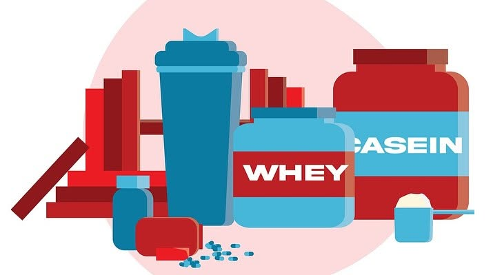

The current high protein craze is not evidence-based, and may have long term risks.
#proteinHD #igf1HD #mtorHD
🚨 The High-Protein Hype: Weak Evidence, Real Risks
Protein is everywhere — in shakes, bars, diet plans, and hospital protocols. It’s marketed as the key to strength, fat loss, longevity, and recovery. But does the science support this “more is better” message?
For example, clinical guidelines recommend augmenting enteral protein during critical illness, but the impact on patient outcomes is uncertain….
🔬 A major ICU trial (3,397 critically ill patients) just tested whether high-protein enteral feeding (100g/L vs 63g/L) improved outcomes. It didn’t.
- No difference in survival
- No faster recovery
- No benefit in ICU or hospital stay, ventilation time, or kidney outcomes
Paper · JAMAJAMA articlejamanetwork.com
This isn’t just about critical care. High-protein diets are aggressively marketed to the general public — from fitness enthusiasts to older adults — with little outcomes-based evidence.
And here’s the part often left out of the conversation:
⚠️ Preclinical and some clinical studies show that high protein intake may increase the risk of diabetes, and actually accelerate aging and shorten lifespan.
Mittendorfer B, Klein S, Fontana L. A word of caution against excessive protein intake. Nat Rev Endocrinol. 2020;16(1):59-66.
Paper · Nat Rev Endocrinol · 2020A word of caution against excessive protein intake.Dietary protein is crucial for human health because it provides essential amino acids for protein synthesis. In addition, dietary protein is more satiating than carbohydrate and fat. Accordingly, many people consider the protein content when purchasing food and beverages and report 'trying to eat more protein'. The global market for protein ingredients is projected to reach approximately US$90 billion by 2021,…pubmed.ncbi.nlm.nih.gov
Green CL, Lamming DW, Fontana L. Molecular mechanisms of dietary restriction promoting health and longevity. Nat Rev Mol Cell Biol. 2022;23(1):56-73.
Paper · Nat Rev Mol Cell Biol · 2022Molecular mechanisms of dietary restriction promoting health and longevity.Dietary restriction with adequate nutrition is the gold standard for delaying ageing and extending healthspan and lifespan in diverse species, including rodents and non-human primates. In this Review, we discuss the effects of dietary restriction in these mammalian model organisms and discuss accumulating data that suggest that dietary restriction results in many of the same physiological, metabolic and molecular…pubmed.ncbi.nlm.nih.gov
Mechanisms linked to IGF-1 signaling and mTOR activation — both stimulated by high protein — are associated with faster aging and increased risk of chronic disease in animal models.
In contrast, adequate protein intake (especially from plant sources) has been linked to greater longevity in several species and human epidemiological studies.
Bottom line: Protein is essential — but excess protein may do more harm than good. Whether in the ICU or in everyday life, more isn’t always better. Nutrition should be evidence-based, not driven by hype, trends, or industry marketing.

